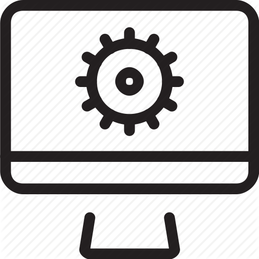

Koolil on sõprussidemed paljude Euroopa riikide ametikoolidega, kuhu saadame parimaid õpilasi ennast täiendama. Aastaid juba toimuvad meie koolis rahvusvahelised juuksuri-, õmblus- ja automaatika erialade võistlused ning konkursid.
Põhikooli lõpetajad omandavad 3 aastaga kutsekeskhariduse. Keskhariduse omandanutel on võimalus õppida eriala nii päevases kui kaugõppes 1 kuni 2 aastaga.

Peale kooli lõpetamist võib jätkata õpinguid kõrgkoolis.
Praktilist väljaõpet viiakse läbi koolis õpetatavate erialade laboratooriumides ning õppetöökodades, mis vastavad Euroopa Standarditele.

Koolil on sõprussidemed paljude Euroopa riikide ametikoolidega, kuhu saadame parimaid õpilasi ennast täiendama. Aastaid juba toimuvad meie koolis rahvusvahelised juuksuri-, õmblus- ja automaatika erialade võistlused ning konkursid.